サービスストーリー仮説（軸）
「20〜30代が“ちょっと良い店”で気軽に飲み、思わず誰かに教えたくなる体験」を、①話題性ある渋谷立地 ②原価率を惜しまない名物（茹でタンは原価率50%超）③オープンキッチンのライブ感 ④口コミ最優先の運営、で一気通貫に設計。狙いは「広告で集客」ではなく体験の質で口コミを増殖させる勝ち筋。
※ 各打ち手は [GN] が根拠。これを1本のストーリーに束ねたのは Claude の解釈［推］であり、社長が明言しているのは個々の打ち手。
「20〜30代が“ちょっと良い店”で気軽に飲み、思わず誰かに教えたくなる体験」を、①話題性ある渋谷立地 ②原価率を惜しまない名物（茹でタンは原価率50%超）③オープンキッチンのライブ感 ④口コミ最優先の運営、で一気通貫に設計。狙いは「広告で集客」ではなく体験の質で口コミを増殖させる勝ち筋。
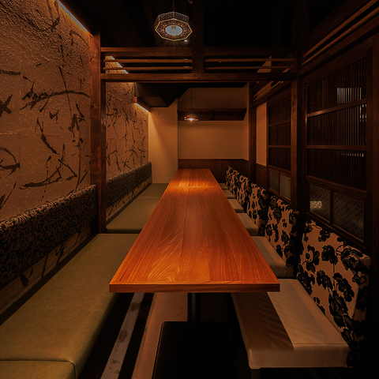
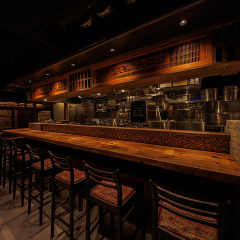
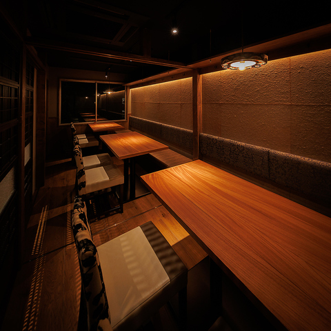
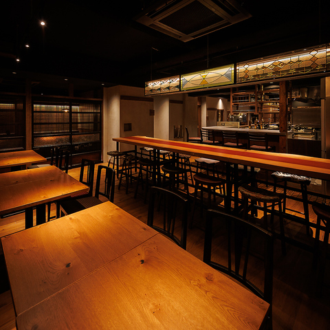
公式Instagram [@sakaba_tsumugido] でも「これ頼まない人はいないっしょ」と最も強く押し出している看板。茹でタンは原価率50%超 [GN]。
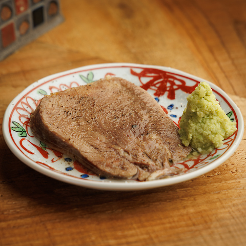
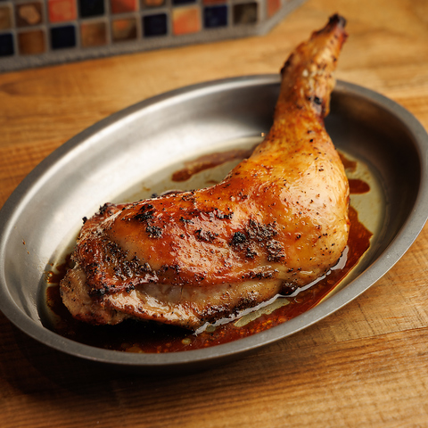
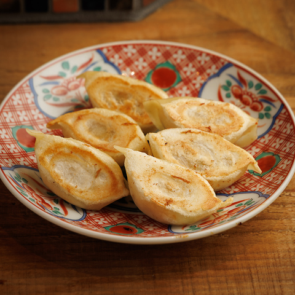
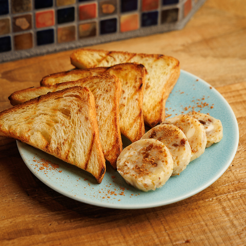
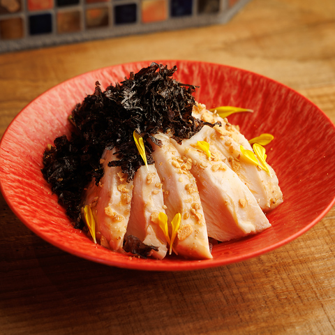
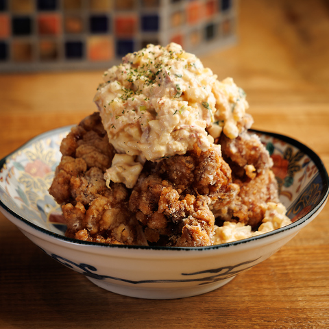
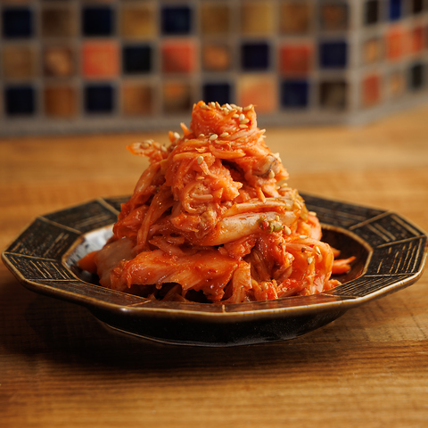
他に「ネギ味噌きゅうり」「薩摩極み鶏 鳥刺し」「山芋の竜田揚げ」「つむぎ堂のポテサラ」やシメのイクラのわっぱ飯（食べ切れなければおにぎりに）も人気 [WS][TG]。
▲当日は「名物が“教えたくなるレベル”か」「おすすめ品がメニュー上で埋もれていないか（注文入口の強さ）」を確認。
事実ベースの [HPG][GN][TG][WS] は信頼してOK。［推］は当日の検証で潰す。
「社長の狙い（①〜⑨の仮説）」と「ターゲット顧客の実際の反応」がズレている箇所を探す。
この「狙い vs 顧客現実」のギャップが、そのまま改善提案になる。